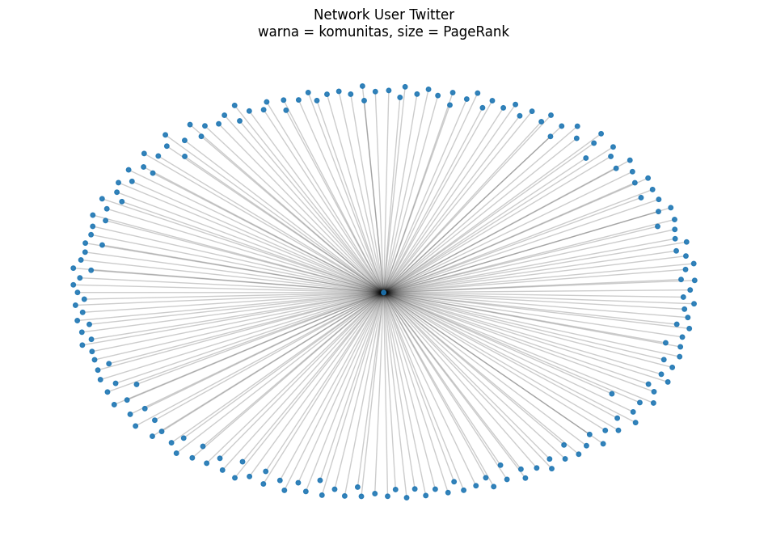

Crawling data RE <>1000#
#@title Twitter Auth Token
twitter_auth_token = '13a9adcf52a301a5b6b74de897fa39cf6a7f9819' # change this auth token
# Import required Python package
!pip install pandas
# Install Node.js (because tweet-harvest built using Node.js)
!sudo apt-get update
!sudo apt-get install -y ca-certificates curl gnupg
!sudo mkdir -p /etc/apt/keyrings
!curl -fsSL https://deb.nodesource.com/gpgkey/nodesource-repo.gpg.key | sudo gpg --dearmor -o /etc/apt/keyrings/nodesource.gpg
!NODE_MAJOR=20 && echo "deb [signed-by=/etc/apt/keyrings/nodesource.gpg] https://deb.nodesource.com/node_$NODE_MAJOR.x nodistro main" | sudo tee /etc/apt/sources.list.d/nodesource.list
!sudo apt-get update
!sudo apt-get install nodejs -y
!node -v
Requirement already satisfied: pandas in /home/codespace/.local/lib/python3.12/site-packages (2.3.1)
Requirement already satisfied: numpy>=1.26.0 in /usr/local/python/3.12.1/lib/python3.12/site-packages (from pandas) (1.26.4)
Requirement already satisfied: python-dateutil>=2.8.2 in /home/codespace/.local/lib/python3.12/site-packages (from pandas) (2.9.0.post0)
Requirement already satisfied: pytz>=2020.1 in /home/codespace/.local/lib/python3.12/site-packages (from pandas) (2025.2)
Requirement already satisfied: tzdata>=2022.7 in /home/codespace/.local/lib/python3.12/site-packages (from pandas) (2025.2)
Requirement already satisfied: six>=1.5 in /home/codespace/.local/lib/python3.12/site-packages (from python-dateutil>=2.8.2->pandas) (1.17.0)
[notice] A new release of pip is available: 25.1.1 -> 25.3
[notice] To update, run: python3 -m pip install --upgrade pip
0% [Working]
Get:1 https://packages.microsoft.com/repos/microsoft-ubuntu-noble-prod noble InRelease [3600 B]
0% [Waiting for headers] [1 InRelease 0 B/3600 B 0%] [Connecting to archive.ubu
0% [Waiting for headers] [Connecting to archive.ubuntu.com] [Connecting to secu
Get:2 https://dl.yarnpkg.com/debian stable InRelease
0% [Waiting for headers] [Connecting to archive.ubuntu.com] [Connecting to secu
0% [Waiting for headers] [Connecting to archive.ubuntu.com] [Connecting to secu
Get:3 https://repo.anaconda.com/pkgs/misc/debrepo/conda stable InRelease [3961 B]
0% [Connecting to archive.ubuntu.com] [Connecting to security.ubuntu.com]
0% [Connecting to archive.ubuntu.com] [Connecting to security.ubuntu.com]
Get:4 https://packages.microsoft.com/repos/microsoft-ubuntu-noble-prod noble/main all Packages [643 B]
0% [Connecting to archive.ubuntu.com] [Connecting to security.ubuntu.com]
0% [4 Packages store 0 B] [Waiting for headers] [Connecting to archive.ubuntu.c
0% [Waiting for headers] [Connecting to archive.ubuntu.com] [Connecting to secu
Get:5 https://packages.microsoft.com/repos/microsoft-ubuntu-noble-prod noble/main amd64 Packages [73.5 kB]
0% [5 Packages 0 B/73.5 kB 0%] [Connecting to archive.ubuntu.com] [Connecting t
0% [Connecting to archive.ubuntu.com] [Connecting to security.ubuntu.com]
0% [5 Packages store 0 B] [Connecting to archive.ubuntu.com] [Connecting to sec
0% [Connecting to archive.ubuntu.com] [Connecting to security.ubuntu.com]
0% [Connecting to archive.ubuntu.com (91.189.91.82)] [Connecting to security.ub
Get:6 https://dl.yarnpkg.com/debian stable/main amd64 Packages [11.8 kB]
0% [Connecting to archive.ubuntu.com (91.189.91.82)] [Connecting to security.ub
0% [6 Packages store 0 B] [Connecting to archive.ubuntu.com (91.189.91.82)] [Co
0% [Connecting to archive.ubuntu.com (91.189.91.82)] [Connecting to security.ub
Get:7 https://dl.yarnpkg.com/debian stable/main all Packages [11.8 kB]
0% [Connecting to archive.ubuntu.com (91.189.91.82)] [Connecting to security.ub
0% [Connecting to archive.ubuntu.com (91.189.91.82)] [Connecting to security.ub
0% [7 Packages store 0 B] [Connecting to archive.ubuntu.com (91.189.91.82)] [Co
0% [Connecting to archive.ubuntu.com (91.189.91.82)] [Connecting to security.ub
0% [Connecting to archive.ubuntu.com (91.189.91.82)] [Connecting to security.ub
Get:8 https://repo.anaconda.com/pkgs/misc/debrepo/conda stable/main amd64 Packages [4557 B]
0% [8 Packages 1709 B/4557 B 38%] [Connecting to archive.ubuntu.com (91.189.91.
0% [Connecting to archive.ubuntu.com (91.189.91.82)] [Connecting to security.ub
0% [8 Packages store 0 B] [Connecting to archive.ubuntu.com (91.189.91.82)] [Co
0% [Connecting to archive.ubuntu.com (91.189.91.82)] [Connecting to security.ub
Get:9 http://archive.ubuntu.com/ubuntu noble InRelease [256 kB]
0% [9 InRelease 14.0 kB/256 kB 5%] [Waiting for headers]
Get:10 http://security.ubuntu.com/ubuntu noble-security InRelease [126 kB]
0% [9 InRelease 14.0 kB/256 kB 5%] [10 InRelease 6832 B/126 kB 5%]
0% [9 InRelease 56.8 kB/256 kB 22%] [10 InRelease 54.0 kB/126 kB 43%]
0% [9 InRelease 135 kB/256 kB 53%]
0% [9 InRelease 155 kB/256 kB 61%]
0% [Waiting for headers] [Waiting for headers]
Get:11 http://security.ubuntu.com/ubuntu noble-security/universe amd64 Packages [1182 kB]
0% [Waiting for headers] [11 Packages 2615 B/1182 kB 0%]
0% [Waiting for headers] [11 Packages 5471 B/1182 kB 0%]
Get:12 http://archive.ubuntu.com/ubuntu noble-updates InRelease [126 kB]
0% [12 InRelease 2548 B/126 kB 2%] [11 Packages 131 kB/1182 kB 11%]
0% [Waiting for headers] [11 Packages 167 kB/1182 kB 14%]
0% [Waiting for headers] [11 Packages 204 kB/1182 kB 17%]
Get:13 http://archive.ubuntu.com/ubuntu noble-backports InRelease [126 kB]
0% [13 InRelease 2548 B/126 kB 2%] [11 Packages 371 kB/1182 kB 31%]
0% [11 Packages 520 kB/1182 kB 44%]
17% [Waiting for headers] [11 Packages 612 kB/1182 kB 52%]
Get:14 http://archive.ubuntu.com/ubuntu noble/restricted amd64 Packages [117 kB]
18% [14 Packages 2617 B/117 kB 2%] [11 Packages 1048 kB/1182 kB 89%]
18% [14 Packages 55.5 kB/117 kB 47%]
18% [11 Packages store 0 B] [14 Packages 55.5 kB/117 kB 47%] [Waiting for heade
19% [14 Packages 117 kB/117 kB 100%] [Waiting for headers]
19% [Waiting for headers] [Waiting for headers]
Get:15 http://archive.ubuntu.com/ubuntu noble/main amd64 Packages [1808 kB]
19% [15 Packages 2067 B/1808 kB 0%] [Waiting for headers]
19% [14 Packages store 0 B] [15 Packages 2067 B/1808 kB 0%] [Waiting for header
19% [15 Packages 7779 B/1808 kB 0%] [Waiting for headers]
Get:16 http://security.ubuntu.com/ubuntu noble-security/multiverse amd64 Packages [33.1 kB]
20% [15 Packages 282 kB/1808 kB 16%] [16 Packages 6903 B/33.1 kB 21%]
20% [15 Packages 285 kB/1808 kB 16%] [Waiting for headers]
Get:17 http://security.ubuntu.com/ubuntu noble-security/restricted amd64 Packages [2796 kB]
20% [15 Packages 288 kB/1808 kB 16%] [17 Packages 3557 B/2796 kB 0%]
20% [16 Packages store 0 B] [15 Packages 288 kB/1808 kB 16%] [17 Packages 3557
21% [15 Packages 288 kB/1808 kB 16%] [17 Packages 17.8 kB/2796 kB 1%]
Get:18 http://security.ubuntu.com/ubuntu noble-security/main amd64 Packages [1700 kB]
30% [15 Packages 1546 kB/1808 kB 85%] [18 Packages 10.7 kB/1700 kB 1%]
30% [17 Packages store 0 B] [15 Packages 1550 kB/1808 kB 86%] [18 Packages 10.7
32% [17 Packages store 0 B] [18 Packages 496 kB/1700 kB 29%]
Get:19 http://archive.ubuntu.com/ubuntu noble/universe amd64 Packages [19.3 MB]
32% [17 Packages store 0 B] [19 Packages 0 B/19.3 MB 0%] [18 Packages 532 kB/17
35% [19 Packages 466 kB/19.3 MB 2%] [18 Packages 1439 kB/1700 kB 85%]
35% [15 Packages store 0 B] [19 Packages 466 kB/19.3 MB 2%] [18 Packages 1439 k
36% [15 Packages store 0 B] [19 Packages 621 kB/19.3 MB 3%]
38% [19 Packages 1040 kB/19.3 MB 5%]
38% [18 Packages store 0 B] [19 Packages 1040 kB/19.3 MB 5%]
39% [19 Packages 1577 kB/19.3 MB 8%]
60% [19 Packages 10.6 MB/19.3 MB 55%]
Get:20 http://archive.ubuntu.com/ubuntu noble/multiverse amd64 Packages [331 kB]
80% [20 Packages 131 kB/331 kB 40%]
80% [19 Packages store 0 B] [20 Packages 131 kB/331 kB 40%]
80% [19 Packages store 0 B]
Get:21 http://archive.ubuntu.com/ubuntu noble-updates/restricted amd64 Packages [2929 kB]
80% [19 Packages store 0 B] [21 Packages 0 B/2929 kB 0%]
87% [19 Packages store 0 B]
Get:22 http://archive.ubuntu.com/ubuntu noble-updates/multiverse amd64 Packages [35.9 kB]
87% [19 Packages store 0 B] [22 Packages 22.5 kB/35.9 kB 63%]
87% [19 Packages store 0 B] [Connecting to archive.ubuntu.com (185.125.190.83)]
Get:23 http://archive.ubuntu.com/ubuntu noble-updates/main amd64 Packages [2059 kB]
87% [19 Packages store 0 B] [23 Packages 0 B/2059 kB 0%]
88% [23 Packages 14.0 kB/2059 kB 1%]
88% [20 Packages store 0 B] [23 Packages 14.0 kB/2059 kB 1%]
88% [23 Packages 14.0 kB/2059 kB 1%]
88% [21 Packages store 0 B] [23 Packages 14.0 kB/2059 kB 1%]
89% [23 Packages 25.5 kB/2059 kB 1%]
89% [22 Packages store 0 B] [23 Packages 25.5 kB/2059 kB 1%]
89% [23 Packages 25.5 kB/2059 kB 1%]
89% [23 Packages 117 kB/2059 kB 6%]
90% [23 Packages 482 kB/2059 kB 23%] 4913 kB/s 0s
94% [Connecting to archive.ubuntu.com (91.189.91.81)] 4913 kB/s 0s
94% [23 Packages store 0 B] [Connecting to archive.ubuntu.com (91.189.91.81)]
94% [Connecting to archive.ubuntu.com (91.189.91.81)] 4913 kB/s 0s
Ign:24 http://archive.ubuntu.com/ubuntu noble-updates/universe amd64 Packages
94% [Working] 4913 kB/s 0s
Get:25 http://archive.ubuntu.com/ubuntu noble-backports/main amd64 Packages [49.4 kB]
94% [25 Packages 12.6 kB/49.4 kB 26%] 4913 kB/s 0s
94% [Waiting for headers] 4913 kB/s 0s
94% [25 Packages store 0 B] [Waiting for headers] 4913 kB/s 0s
95% [Waiting for headers] 4913 kB/s 0s
Get:26 http://archive.ubuntu.com/ubuntu noble-backports/universe amd64 Packages [34.3 kB]
95% [26 Packages 2619 B/34.3 kB 8%] 4913 kB/s 0s
95% [Working] 4913 kB/s 0s
95% [26 Packages store 0 B] [Waiting for headers] 4913 kB/s 0s
95% [Waiting for headers] 4913 kB/s 0s
Get:24 http://archive.ubuntu.com/ubuntu noble-updates/universe amd64 Packages [1943 kB]
95% [24 Packages 0 B/1942 kB 0%] 4913 kB/s 0s
Err:24 http://archive.ubuntu.com/ubuntu noble-updates/universe amd64 Packages
File has unexpected size (1942484 != 1942540). Mirror sync in progress? [IP: 91.189.91.81 80]
Hashes of expected file:
- Filesize:1942540 [weak]
- SHA256:16b8796c0dfa892e74d5c88d0a6853bd2c3148d64aeed3417c6822fa30ba32e2
- SHA1:32ae47d3d8b90d651684bd19edbba1c4e5032830 [weak]
- MD5Sum:177b22218c52bf2ca70088ee841ce1f4 [weak]
Release file created at: Wed, 03 Dec 2025 23:38:47 +0000
95% [Working] 4913 kB/s 0s
Fetched 33.2 MB in 9s (3869 kB/s)
Reading package lists... 0%
Reading package lists... 0%
Reading package lists... 0%
Reading package lists... 0%
Reading package lists... 0%
Reading package lists... 0%
Reading package lists... 0%
Reading package lists... 0%
Reading package lists... 0%
Reading package lists... 6%
Reading package lists... 6%
Reading package lists... 73%
Reading package lists... 73%
Reading package lists... 73%
Reading package lists... 73%
Reading package lists... 74%
Reading package lists... 74%
Reading package lists... 75%
Reading package lists... 75%
Reading package lists... 75%
Reading package lists... 75%
Reading package lists... 82%
Reading package lists... 82%
Reading package lists... 87%
Reading package lists... 87%
Reading package lists... 99%
Reading package lists... 99%
Reading package lists... 99%
Reading package lists... 99%
Reading package lists... 99%
Reading package lists... 99%
Reading package lists... 99%
Reading package lists... 99%
Reading package lists... Done
E: Failed to fetch http://archive.ubuntu.com/ubuntu/dists/noble-updates/universe/binary-amd64/Packages.gz File has unexpected size (1942484 != 1942540). Mirror sync in progress? [IP: 91.189.91.81 80]
Hashes of expected file:
- Filesize:1942540 [weak]
- SHA256:16b8796c0dfa892e74d5c88d0a6853bd2c3148d64aeed3417c6822fa30ba32e2
- SHA1:32ae47d3d8b90d651684bd19edbba1c4e5032830 [weak]
- MD5Sum:177b22218c52bf2ca70088ee841ce1f4 [weak]
Release file created at: Wed, 03 Dec 2025 23:38:47 +0000
E: Some index files failed to download. They have been ignored, or old ones used instead.
Reading package lists... 0%
Reading package lists... 0%
Reading package lists... 0%
Reading package lists... 0%
Reading package lists... 0%
Reading package lists... 0%
Reading package lists... 0%
Reading package lists... 0%
Reading package lists... 0%
Reading package lists... 6%
Reading package lists... 6%
Reading package lists... 73%
Reading package lists... 73%
Reading package lists... 73%
Reading package lists... 73%
Reading package lists... 74%
Reading package lists... 74%
Reading package lists... 75%
Reading package lists... 75%
Reading package lists... 75%
Reading package lists... 75%
Reading package lists... 82%
Reading package lists... 82%
Reading package lists... 87%
Reading package lists... 87%
Reading package lists... 99%
Reading package lists... 99%
Reading package lists... 99%
Reading package lists... 99%
Reading package lists... 99%
Reading package lists... 99%
Reading package lists... 99%
Reading package lists... 99%
Reading package lists... Done
Building dependency tree... 0%
Building dependency tree... 0%
Building dependency tree... 50%
Building dependency tree... 50%
Building dependency tree... 54%
Building dependency tree... Done
Reading state information... 0%
Reading state information... 0%
Reading state information... Done
ca-certificates is already the newest version (20240203).
curl is already the newest version (8.5.0-2ubuntu10.6).
gnupg is already the newest version (2.4.4-2ubuntu17.3).
gnupg set to manually installed.
0 upgraded, 0 newly installed, 0 to remove and 73 not upgraded.
deb [signed-by=/etc/apt/keyrings/nodesource.gpg] https://deb.nodesource.com/node_20.x nodistro main
0% [Working]
Hit:1 https://dl.yarnpkg.com/debian stable InRelease
0% [Waiting for headers] [Waiting for headers] [Waiting for headers] [Connectin
Get:2 https://deb.nodesource.com/node_20.x nodistro InRelease [12.1 kB]
0% [Waiting for headers] [Waiting for headers] [2 InRelease 12.1 kB/12.1 kB 100
0% [Waiting for headers] [Waiting for headers] [Connecting to archive.ubuntu.co
Hit:3 https://repo.anaconda.com/pkgs/misc/debrepo/conda stable InRelease
0% [Waiting for headers] [Connecting to archive.ubuntu.com (91.189.91.81)] [Con
0% [Waiting for headers] [Connecting to archive.ubuntu.com (91.189.91.81)] [Con
0% [Waiting for headers] [Connecting to archive.ubuntu.com (91.189.91.81)] [Con
Get:4 https://deb.nodesource.com/node_20.x nodistro/main amd64 Packages [13.1 kB]
0% [Waiting for headers] [4 Packages 0 B/13.1 kB 0%] [Connecting to archive.ubu
0% [Waiting for headers] [Connecting to archive.ubuntu.com (91.189.91.81)] [Con
0% [4 Packages store 0 B] [Waiting for headers] [Connecting to archive.ubuntu.c
0% [Waiting for headers] [Connecting to archive.ubuntu.com (91.189.91.81)] [Con
0% [Waiting for headers] [Connecting to archive.ubuntu.com (91.189.91.81)] [Con
Hit:5 https://packages.microsoft.com/repos/microsoft-ubuntu-noble-prod noble InRelease
0% [Waiting for headers] [Waiting for headers]
0% [Waiting for headers] [Waiting for headers]
Hit:6 http://archive.ubuntu.com/ubuntu noble InRelease
0% [Waiting for headers]
Hit:7 http://security.ubuntu.com/ubuntu noble-security InRelease
0% [Waiting for headers]
0% [Waiting for headers]
0% [Waiting for headers]
Get:8 http://archive.ubuntu.com/ubuntu noble-updates InRelease [126 kB]
0% [8 InRelease 12.5 kB/126 kB 10%]
0% [8 InRelease 61.1 kB/126 kB 48%]
0% [Waiting for headers]
0% [Waiting for headers]
Hit:9 http://archive.ubuntu.com/ubuntu noble-backports InRelease
0% [Working]
Get:10 http://archive.ubuntu.com/ubuntu noble-updates/main amd64 Packages [2059 kB]
0% [Working]
0% [11 Packages store 0 B]
0% [Working]
Get:10 http://archive.ubuntu.com/ubuntu noble-updates/main amd64 Packages [2059 kB]
0% [10 Packages 2059 kB]
0% [Working]
0% [12 Packages store 0 B]
54% [12 Packages store 0 B] [Waiting for headers]
54% [Waiting for headers]
Get:10 http://archive.ubuntu.com/ubuntu noble-updates/main amd64 Packages [2059 kB]
54% [10 Packages 2615 B/2059 kB 0%]
59% [10 Packages 418 kB/2059 kB 20%]
Get:13 http://archive.ubuntu.com/ubuntu noble-updates/universe amd64 Packages [1942 kB]
77% [13 Packages 3837 B/1942 kB 0%]
78% [10 Packages store 0 B] [13 Packages 15.3 kB/1942 kB 1%]
84% [13 Packages 565 kB/1942 kB 29%]
100% [Working]
100% [13 Packages store 0 B]
100% [Working]
Fetched 4153 kB in 3s (1298 kB/s)
Reading package lists... 0%
Reading package lists... 0%
Reading package lists... 0%
Reading package lists... 0%
Reading package lists... 0%
Reading package lists... 0%
Reading package lists... 0%
Reading package lists... 0%
Reading package lists... 0%
Reading package lists... 0%
Reading package lists... 0%
Reading package lists... 5%
Reading package lists... 5%
Reading package lists... 56%
Reading package lists... 56%
Reading package lists... 57%
Reading package lists... 57%
Reading package lists... 57%
Reading package lists... 57%
Reading package lists... 64%
Reading package lists... 64%
Reading package lists... 70%
Reading package lists... 70%
Reading package lists... 80%
Reading package lists... 80%
Reading package lists... 80%
Reading package lists... 80%
Reading package lists... 80%
Reading package lists... 80%
Reading package lists... 80%
Reading package lists... 80%
Reading package lists... 86%
Reading package lists... 86%
Reading package lists... 90%
Reading package lists... 90%
Reading package lists... 90%
Reading package lists... 99%
Reading package lists... 99%
Reading package lists... 99%
Reading package lists... 99%
Reading package lists... 99%
Reading package lists... 99%
Reading package lists... 99%
Reading package lists... 99%
Reading package lists... Done
Reading package lists... 0%
Reading package lists... 0%
Reading package lists... 0%
Reading package lists... 0%
Reading package lists... 0%
Reading package lists... 0%
Reading package lists... 0%
Reading package lists... 0%
Reading package lists... 0%
Reading package lists... 0%
Reading package lists... 0%
Reading package lists... 5%
Reading package lists... 5%
Reading package lists... 56%
Reading package lists... 56%
Reading package lists... 57%
Reading package lists... 57%
Reading package lists... 57%
Reading package lists... 57%
Reading package lists... 64%
Reading package lists... 64%
Reading package lists... 70%
Reading package lists... 70%
Reading package lists... 70%
Reading package lists... 80%
Reading package lists... 80%
Reading package lists... 80%
Reading package lists... 80%
Reading package lists... 80%
Reading package lists... 80%
Reading package lists... 80%
Reading package lists... 80%
Reading package lists... 86%
Reading package lists... 86%
Reading package lists... 90%
Reading package lists... 90%
Reading package lists... 99%
Reading package lists... 99%
Reading package lists... 99%
Reading package lists... 99%
Reading package lists... 99%
Reading package lists... 99%
Reading package lists... 99%
Reading package lists... 99%
Reading package lists... Done
Building dependency tree... 0%
Building dependency tree... 0%
Building dependency tree... 50%
Building dependency tree... 50%
Building dependency tree... Done
Reading state information... 0%
Reading state information... 0%
Reading state information... Done
The following NEW packages will be installed:
nodejs
0 upgraded, 1 newly installed, 0 to remove and 95 not upgraded.
Need to get 32.0 MB of archives.
After this operation, 197 MB of additional disk space will be used.
0% [Working]
Get:1 https://deb.nodesource.com/node_20.x nodistro/main amd64 nodejs amd64 20.19.6-1nodesource1 [32.0 MB]
0% [1 nodejs 0 B/32.0 MB 0%]
100% [Working]
Fetched 32.0 MB in 0s (67.7 MB/s)
Selecting previously unselected package nodejs.
(Reading database ...
(Reading database ... 5%
(Reading database ... 10%
(Reading database ... 15%
(Reading database ... 20%
(Reading database ... 25%
(Reading database ... 30%
(Reading database ... 35%
(Reading database ... 40%
(Reading database ... 45%
(Reading database ... 50%
(Reading database ... 55%
(Reading database ... 60%
(Reading database ... 65%
(Reading database ... 70%
(Reading database ... 75%
(Reading database ... 80%
(Reading database ... 85%
(Reading database ... 90%
(Reading database ... 95%
(Reading database ... 100%
(Reading database ... 58629 files and directories currently installed.)
Preparing to unpack .../nodejs_20.19.6-1nodesource1_amd64.deb ...
Unpacking nodejs (20.19.6-1nodesource1) ...
Setting up nodejs (20.19.6-1nodesource1) ...
Processing triggers for man-db (2.12.0-4build2) ...
v22.17.0
# Install missing dependency for Chromium (used by tweet-harvest)
!sudo apt-get install -y libatk-bridge2.0-0 libgtk-3-0 libgbm-dev
Reading package lists... 0%
Reading package lists... 0%
Reading package lists... 0%
Reading package lists... 0%
Reading package lists... 0%
Reading package lists... 0%
Reading package lists... 0%
Reading package lists... 0%
Reading package lists... 0%
Reading package lists... 0%
Reading package lists... 0%
Reading package lists... 5%
Reading package lists... 5%
Reading package lists... 56%
Reading package lists... 56%
Reading package lists... 57%
Reading package lists... 57%
Reading package lists... 57%
Reading package lists... 57%
Reading package lists... 64%
Reading package lists... 64%
Reading package lists... 70%
Reading package lists... 70%
Reading package lists... 80%
Reading package lists... 80%
Reading package lists... 80%
Reading package lists... 80%
Reading package lists... 80%
Reading package lists... 80%
Reading package lists... 80%
Reading package lists... 80%
Reading package lists... 86%
Reading package lists... 86%
Reading package lists... 90%
Reading package lists... 90%
Reading package lists... 97%
Reading package lists... 99%
Reading package lists... 99%
Reading package lists... 99%
Reading package lists... 99%
Reading package lists... 99%
Reading package lists... 99%
Reading package lists... 99%
Reading package lists... 99%
Reading package lists... Done
Building dependency tree... 0%
Building dependency tree... 0%
Building dependency tree... 50%
Building dependency tree... 50%
Building dependency tree... Done
Reading state information... 0%
Reading state information... 0%
Reading state information... Done
Note, selecting 'libatk-bridge2.0-0t64' instead of 'libatk-bridge2.0-0'
Note, selecting 'libgtk-3-0t64' instead of 'libgtk-3-0'
The following additional packages will be installed:
adwaita-icon-theme at-spi2-common at-spi2-core dbus-user-session
dconf-gsettings-backend dconf-service gsettings-desktop-schemas
gtk-update-icon-cache hicolor-icon-theme humanity-icon-theme libatk1.0-0t64
libatspi2.0-0t64 libavahi-client3 libavahi-common-data libavahi-common3
libcairo-gobject2 libcolord2 libcups2t64 libdconf1 libdrm-amdgpu1
libdrm-common libdrm-intel1 libdrm2 libepoxy0 libgbm1 libgdk-pixbuf-2.0-0
libgdk-pixbuf2.0-bin libgdk-pixbuf2.0-common libgtk-3-bin libgtk-3-common
liblcms2-2 libllvm20 libpciaccess0 librsvg2-2 librsvg2-common
libsensors-config libsensors5 libwayland-client0 libwayland-cursor0
libwayland-egl1 libwayland-server0 libx11-xcb1 libxcb-dri3-0 libxcb-present0
libxcb-randr0 libxcb-sync1 libxcb-xfixes0 libxcomposite1 libxcursor1
libxdamage1 libxfixes3 libxi6 libxinerama1 libxkbcommon0 libxrandr2
libxshmfence1 libxtst6 mesa-libgallium session-migration shared-mime-info
ubuntu-mono xkb-data
Suggested packages:
colord cups-common gvfs liblcms2-utils pciutils librsvg2-bin lm-sensors
The following NEW packages will be installed:
adwaita-icon-theme at-spi2-common at-spi2-core dbus-user-session
dconf-gsettings-backend dconf-service gsettings-desktop-schemas
gtk-update-icon-cache hicolor-icon-theme humanity-icon-theme
libatk-bridge2.0-0t64 libatk1.0-0t64 libatspi2.0-0t64 libavahi-client3
libavahi-common-data libavahi-common3 libcairo-gobject2 libcolord2
libcups2t64 libdconf1 libdrm-amdgpu1 libdrm-common libdrm-intel1 libdrm2
libepoxy0 libgbm-dev libgbm1 libgdk-pixbuf-2.0-0 libgdk-pixbuf2.0-bin
libgdk-pixbuf2.0-common libgtk-3-0t64 libgtk-3-bin libgtk-3-common
liblcms2-2 libllvm20 libpciaccess0 librsvg2-2 librsvg2-common
libsensors-config libsensors5 libwayland-client0 libwayland-cursor0
libwayland-egl1 libwayland-server0 libx11-xcb1 libxcb-dri3-0 libxcb-present0
libxcb-randr0 libxcb-sync1 libxcb-xfixes0 libxcomposite1 libxcursor1
libxdamage1 libxfixes3 libxi6 libxinerama1 libxkbcommon0 libxrandr2
libxshmfence1 libxtst6 mesa-libgallium session-migration shared-mime-info
ubuntu-mono xkb-data
0 upgraded, 65 newly installed, 0 to remove and 95 not upgraded.
Need to get 52.7 MB of archives.
After this operation, 262 MB of additional disk space will be used.
0% [Working]
Get:1 http://archive.ubuntu.com/ubuntu noble-updates/main amd64 dbus-user-session amd64 1.14.10-4ubuntu4.1 [9968 B]
0% [1 dbus-user-session 8279 B/9968 B 83%]
0% [Working]
Get:2 http://archive.ubuntu.com/ubuntu noble/main amd64 shared-mime-info amd64 2.4-4 [474 kB]
0% [2 shared-mime-info 2564 B/474 kB 1%]
0% [2 shared-mime-info 84.0 kB/474 kB 18%]
1% [2 shared-mime-info 411 kB/474 kB 87%]
Get:3 http://archive.ubuntu.com/ubuntu noble-updates/main amd64 xkb-data all 2.41-2ubuntu1.1 [397 kB]
1% [3 xkb-data 1368 B/397 kB 0%]
2% [Working]
Get:4 http://archive.ubuntu.com/ubuntu noble-updates/main amd64 libdrm-common all 2.4.122-1~ubuntu0.24.04.2 [8464 B]
2% [4 libdrm-common 5867 B/8464 B 69%]
3% [Waiting for headers]
Get:5 http://archive.ubuntu.com/ubuntu noble-updates/main amd64 libdrm2 amd64 2.4.122-1~ubuntu0.24.04.2 [40.6 kB]
3% [5 libdrm2 2825 B/40.6 kB 7%]
Get:6 http://archive.ubuntu.com/ubuntu noble/main amd64 libsensors-config all 1:3.6.0-9build1 [5546 B]
3% [6 libsensors-config 2023 B/5546 B 36%]
3% [Working]
Get:7 http://archive.ubuntu.com/ubuntu noble/main amd64 libsensors5 amd64 1:3.6.0-9build1 [26.6 kB]
3% [7 libsensors5 1899 B/26.6 kB 7%]
Get:8 http://archive.ubuntu.com/ubuntu noble/main amd64 libxkbcommon0 amd64 1.6.0-1build1 [122 kB]
4% [8 libxkbcommon0 711 B/122 kB 1%]
4% [Working]
Get:9 http://archive.ubuntu.com/ubuntu noble-updates/main amd64 libgdk-pixbuf2.0-common all 2.42.10+dfsg-3ubuntu3.2 [8192 B]
4% [9 libgdk-pixbuf2.0-common 1627 B/8192 B 20%]
4% [Waiting for headers]
Get:10 http://archive.ubuntu.com/ubuntu noble-updates/main amd64 libgdk-pixbuf-2.0-0 amd64 2.42.10+dfsg-3ubuntu3.2 [147 kB]
4% [10 libgdk-pixbuf-2.0-0 0 B/147 kB 0%]
5% [Waiting for headers]
Get:11 http://archive.ubuntu.com/ubuntu noble-updates/main amd64 gtk-update-icon-cache amd64 3.24.41-4ubuntu1.3 [51.9 kB]
5% [11 gtk-update-icon-cache 2324 B/51.9 kB 4%]
5% [Waiting for headers]
Get:12 http://archive.ubuntu.com/ubuntu noble/main amd64 hicolor-icon-theme all 0.17-2 [9976 B]
5% [12 hicolor-icon-theme 2677 B/9976 B 27%]
6% [Working]
Get:13 http://archive.ubuntu.com/ubuntu noble/main amd64 humanity-icon-theme all 0.6.16 [1282 kB]
6% [13 humanity-icon-theme 6846 B/1282 kB 1%]
8% [Waiting for headers]
Get:14 http://archive.ubuntu.com/ubuntu noble/main amd64 ubuntu-mono all 24.04-0ubuntu1 [151 kB]
8% [14 ubuntu-mono 19.4 kB/151 kB 13%]
8% [Working]
Get:15 http://archive.ubuntu.com/ubuntu noble/main amd64 adwaita-icon-theme all 46.0-1 [723 kB]
8% [15 adwaita-icon-theme 22.5 kB/723 kB 3%]
10% [Working]
Get:16 http://archive.ubuntu.com/ubuntu noble/main amd64 at-spi2-common all 2.52.0-1build1 [8674 B]
10% [16 at-spi2-common 2199 B/8674 B 25%]
10% [Working]
Get:17 http://archive.ubuntu.com/ubuntu noble/main amd64 libxi6 amd64 2:1.8.1-1build1 [32.4 kB]
10% [17 libxi6 3064 B/32.4 kB 9%]
11% [Working]
Get:18 http://archive.ubuntu.com/ubuntu noble/main amd64 libatspi2.0-0t64 amd64 2.52.0-1build1 [80.5 kB]
11% [18 libatspi2.0-0t64 5277 B/80.5 kB 7%]
Get:19 http://archive.ubuntu.com/ubuntu noble/main amd64 libxtst6 amd64 2:1.2.3-1.1build1 [12.6 kB]
11% [19 libxtst6 8186 B/12.6 kB 65%]
Get:20 http://archive.ubuntu.com/ubuntu noble-updates/main amd64 libdconf1 amd64 0.40.0-4ubuntu0.1 [39.6 kB]
11% [20 libdconf1 5712 B/39.6 kB 14%]
Get:21 http://archive.ubuntu.com/ubuntu noble-updates/main amd64 dconf-service amd64 0.40.0-4ubuntu0.1 [27.6 kB]
12% [21 dconf-service 2962 B/27.6 kB 11%]
12% [Working]
Get:22 http://archive.ubuntu.com/ubuntu noble-updates/main amd64 dconf-gsettings-backend amd64 0.40.0-4ubuntu0.1 [22.1 kB]
12% [22 dconf-gsettings-backend 5084 B/22.1 kB 23%]
12% [Waiting for headers]
Get:23 http://archive.ubuntu.com/ubuntu noble/main amd64 session-migration amd64 0.3.9build1 [9034 B]
12% [23 session-migration 9034 B/9034 B 100%]
13% [Waiting for headers]
Get:24 http://archive.ubuntu.com/ubuntu noble-updates/main amd64 gsettings-desktop-schemas all 46.1-0ubuntu1 [35.6 kB]
13% [24 gsettings-desktop-schemas 2566 B/35.6 kB 7%]
13% [Waiting for headers]
Get:25 http://archive.ubuntu.com/ubuntu noble/main amd64 at-spi2-core amd64 2.52.0-1build1 [56.6 kB]
13% [25 at-spi2-core 41.1 kB/56.6 kB 73%]
Get:26 http://archive.ubuntu.com/ubuntu noble/main amd64 libatk1.0-0t64 amd64 2.52.0-1build1 [55.3 kB]
13% [26 libatk1.0-0t64 18.5 kB/55.3 kB 33%]
Get:27 http://archive.ubuntu.com/ubuntu noble/main amd64 libatk-bridge2.0-0t64 amd64 2.52.0-1build1 [66.0 kB]
14% [27 libatk-bridge2.0-0t64 7371 B/66.0 kB 11%]
14% [Working]
Get:28 http://archive.ubuntu.com/ubuntu noble/main amd64 libavahi-common-data amd64 0.8-13ubuntu6 [29.7 kB]
14% [28 libavahi-common-data 4826 B/29.7 kB 16%]
15% [Waiting for headers]
Get:29 http://archive.ubuntu.com/ubuntu noble/main amd64 libavahi-common3 amd64 0.8-13ubuntu6 [23.3 kB]
15% [29 libavahi-common3 9156 B/23.3 kB 39%]
15% [Working]
Get:30 http://archive.ubuntu.com/ubuntu noble/main amd64 libavahi-client3 amd64 0.8-13ubuntu6 [26.8 kB]
15% [30 libavahi-client3 2694 B/26.8 kB 10%]
Get:31 http://archive.ubuntu.com/ubuntu noble/main amd64 libcairo-gobject2 amd64 1.18.0-3build1 [127 kB]
15% [31 libcairo-gobject2 15.4 kB/127 kB 12%]
16% [Working]
Get:32 http://archive.ubuntu.com/ubuntu noble/main amd64 liblcms2-2 amd64 2.14-2build1 [161 kB]
16% [32 liblcms2-2 21.1 kB/161 kB 13%]
16% [Working]
Get:33 http://archive.ubuntu.com/ubuntu noble/main amd64 libcolord2 amd64 1.4.7-1build2 [149 kB]
16% [33 libcolord2 6848 B/149 kB 5%]
17% [Waiting for headers]
Get:34 http://archive.ubuntu.com/ubuntu noble-updates/main amd64 libcups2t64 amd64 2.4.7-1.2ubuntu7.7 [273 kB]
17% [34 libcups2t64 6848 B/273 kB 3%]
Get:35 http://archive.ubuntu.com/ubuntu noble-updates/main amd64 libdrm-amdgpu1 amd64 2.4.122-1~ubuntu0.24.04.2 [20.9 kB]
18% [35 libdrm-amdgpu1 6788 B/20.9 kB 33%]
18% [Waiting for headers]
Get:36 http://archive.ubuntu.com/ubuntu noble-updates/main amd64 libpciaccess0 amd64 0.17-3ubuntu0.24.04.2 [18.9 kB]
Get:37 http://archive.ubuntu.com/ubuntu noble-updates/main amd64 libdrm-intel1 amd64 2.4.122-1~ubuntu0.24.04.2 [63.8 kB]
18% [37 libdrm-intel1 2002 B/63.8 kB 3%]
Get:38 http://archive.ubuntu.com/ubuntu noble/main amd64 libepoxy0 amd64 1.5.10-1build1 [220 kB]
19% [38 libepoxy0 50.7 kB/220 kB 23%]
19% [Waiting for headers]
Get:39 http://archive.ubuntu.com/ubuntu noble/main amd64 libwayland-server0 amd64 1.22.0-2.1build1 [33.9 kB]
19% [39 libwayland-server0 19.3 kB/33.9 kB 57%]
Get:40 http://archive.ubuntu.com/ubuntu noble-updates/main amd64 libllvm20 amd64 1:20.1.2-0ubuntu1~24.04.2 [30.6 MB]
20% [40 libllvm20 59.6 kB/30.6 MB 0%]
34% [40 libllvm20 9737 kB/30.6 MB 32%]
49% [40 libllvm20 19.4 MB/30.6 MB 64%]
64% [40 libllvm20 29.1 MB/30.6 MB 95%]
66% [Working]
Get:41 http://archive.ubuntu.com/ubuntu noble/main amd64 libx11-xcb1 amd64 2:1.8.7-1build1 [7800 B]
66% [41 libx11-xcb1 7800 B/7800 B 100%]
Get:42 http://archive.ubuntu.com/ubuntu noble/main amd64 libxcb-dri3-0 amd64 1.15-1ubuntu2 [7142 B]
67% [Connecting to archive.ubuntu.com (91.189.91.82)]
Get:43 http://archive.ubuntu.com/ubuntu noble/main amd64 libxcb-present0 amd64 1.15-1ubuntu2 [5676 B]
Get:44 http://archive.ubuntu.com/ubuntu noble/main amd64 libxcb-randr0 amd64 1.15-1ubuntu2 [17.9 kB]
67% [44 libxcb-randr0 6850 B/17.9 kB 38%]
68% [Waiting for headers]
Get:45 http://archive.ubuntu.com/ubuntu noble/main amd64 libxcb-sync1 amd64 1.15-1ubuntu2 [9312 B]
68% [45 libxcb-sync1 123 B/9312 B 1%]
68% [Working]
Get:46 http://archive.ubuntu.com/ubuntu noble/main amd64 libxcb-xfixes0 amd64 1.15-1ubuntu2 [10.2 kB]
68% [46 libxcb-xfixes0 1945 B/10.2 kB 19%]
68% [Waiting for headers]
Get:47 http://archive.ubuntu.com/ubuntu noble/main amd64 libxshmfence1 amd64 1.3-1build5 [4764 B]
68% [47 libxshmfence1 34 B/4764 B 1%]
69% [Waiting for headers]
Get:48 http://archive.ubuntu.com/ubuntu noble-updates/main amd64 mesa-libgallium amd64 25.0.7-0ubuntu0.24.04.2 [10.3 MB]
69% [48 mesa-libgallium 687 B/10.3 MB 0%]
69% [48 mesa-libgallium 169 kB/10.3 MB 2%] 5603 kB/s 3s
70% [48 mesa-libgallium 936 kB/10.3 MB 9%] 5603 kB/s 2s
75% [48 mesa-libgallium 4457 kB/10.3 MB 43%] 5603 kB/s 2s
Get:49 http://archive.ubuntu.com/ubuntu noble-updates/main amd64 libgbm1 amd64 25.0.7-0ubuntu0.24.04.2 [32.7 kB]
85% [49 libgbm1 0 B/32.7 kB 0%] 5603 kB/s 1s
85% [Working] 5603 kB/s 1s
Get:50 http://archive.ubuntu.com/ubuntu noble-updates/main amd64 libgbm-dev amd64 25.0.7-0ubuntu0.24.04.2 [9840 B]
Get:51 http://archive.ubuntu.com/ubuntu noble-updates/main amd64 libgdk-pixbuf2.0-bin amd64 2.42.10+dfsg-3ubuntu3.2 [13.9 kB]
Get:52 http://archive.ubuntu.com/ubuntu noble/main amd64 libwayland-client0 amd64 1.22.0-2.1build1 [26.4 kB]
Get:53 http://archive.ubuntu.com/ubuntu noble/main amd64 libwayland-cursor0 amd64 1.22.0-2.1build1 [10.4 kB]
86% [53 libwayland-cursor0 10.1 kB/10.4 kB 97%] 5603 kB/s 1s
Get:54 http://archive.ubuntu.com/ubuntu noble/main amd64 libwayland-egl1 amd64 1.22.0-2.1build1 [5628 B]
Get:55 http://archive.ubuntu.com/ubuntu noble/main amd64 libxcomposite1 amd64 1:0.4.5-1build3 [6320 B]
Get:56 http://archive.ubuntu.com/ubuntu noble/main amd64 libxfixes3 amd64 1:6.0.0-2build1 [10.8 kB]
Get:57 http://archive.ubuntu.com/ubuntu noble/main amd64 libxcursor1 amd64 1:1.2.1-1build1 [20.7 kB]
88% [Waiting for headers] 5603 kB/s 1s
Get:58 http://archive.ubuntu.com/ubuntu noble/main amd64 libxdamage1 amd64 1:1.1.6-1build1 [6150 B]
88% [58 libxdamage1 6150 B/6150 B 100%] 5603 kB/s 1s
88% [Waiting for headers] 5603 kB/s 1s
Get:59 http://archive.ubuntu.com/ubuntu noble/main amd64 libxinerama1 amd64 2:1.1.4-3build1 [6396 B]
88% [59 libxinerama1 6396 B/6396 B 100%] 5603 kB/s 1s
88% [Waiting for headers] 5603 kB/s 1s
Get:60 http://archive.ubuntu.com/ubuntu noble/main amd64 libxrandr2 amd64 2:1.5.2-2build1 [19.7 kB]
88% [60 libxrandr2 19.7 kB/19.7 kB 100%] 5603 kB/s 1s
89% [Waiting for headers] 5603 kB/s 1s
Get:61 http://archive.ubuntu.com/ubuntu noble-updates/main amd64 libgtk-3-common all 3.24.41-4ubuntu1.3 [1426 kB]
89% [61 libgtk-3-common 48.3 kB/1426 kB 3%] 5603 kB/s 1s
Get:62 http://archive.ubuntu.com/ubuntu noble-updates/main amd64 libgtk-3-0t64 amd64 3.24.41-4ubuntu1.3 [2913 kB]
91% [62 libgtk-3-0t64 34.3 kB/2913 kB 1%] 5603 kB/s 0s
Get:63 http://archive.ubuntu.com/ubuntu noble-updates/main amd64 libgtk-3-bin amd64 3.24.41-4ubuntu1.3 [73.9 kB]
96% [63 libgtk-3-bin 5009 B/73.9 kB 7%] 5603 kB/s 0s
96% [Waiting for headers] 5603 kB/s 0s
Get:64 http://archive.ubuntu.com/ubuntu noble/main amd64 librsvg2-2 amd64 2.58.0+dfsg-1build1 [2135 kB]
96% [64 librsvg2-2 7140 B/2135 kB 0%] 5603 kB/s 0s
Get:65 http://archive.ubuntu.com/ubuntu noble/main amd64 librsvg2-common amd64 2.58.0+dfsg-1build1 [11.8 kB]
100% [Working] 5603 kB/s 0s
Fetched 52.7 MB in 8s (6244 kB/s)
Extracting templates from packages: 46%
Extracting templates from packages: 92%
Extracting templates from packages: 100%
Selecting previously unselected package dbus-user-session.
(Reading database ...
(Reading database ... 5%
(Reading database ... 10%
(Reading database ... 15%
(Reading database ... 20%
(Reading database ... 25%
(Reading database ... 30%
(Reading database ... 35%
(Reading database ... 40%
(Reading database ... 45%
(Reading database ... 50%
(Reading database ... 55%
(Reading database ... 60%
(Reading database ... 65%
(Reading database ... 70%
(Reading database ... 75%
(Reading database ... 80%
(Reading database ... 85%
(Reading database ... 90%
(Reading database ... 95%
(Reading database ... 100%
(Reading database ... 63992 files and directories currently installed.)
Preparing to unpack .../00-dbus-user-session_1.14.10-4ubuntu4.1_amd64.deb ...
Unpacking dbus-user-session (1.14.10-4ubuntu4.1) ...
Selecting previously unselected package shared-mime-info.
Preparing to unpack .../01-shared-mime-info_2.4-4_amd64.deb ...
Unpacking shared-mime-info (2.4-4) ...
Selecting previously unselected package xkb-data.
Preparing to unpack .../02-xkb-data_2.41-2ubuntu1.1_all.deb ...
Unpacking xkb-data (2.41-2ubuntu1.1) ...
Selecting previously unselected package libdrm-common.
Preparing to unpack .../03-libdrm-common_2.4.122-1~ubuntu0.24.04.2_all.deb ...
Unpacking libdrm-common (2.4.122-1~ubuntu0.24.04.2) ...
Selecting previously unselected package libdrm2:amd64.
Preparing to unpack .../04-libdrm2_2.4.122-1~ubuntu0.24.04.2_amd64.deb ...
Unpacking libdrm2:amd64 (2.4.122-1~ubuntu0.24.04.2) ...
Selecting previously unselected package libsensors-config.
Preparing to unpack .../05-libsensors-config_1%3a3.6.0-9build1_all.deb ...
Unpacking libsensors-config (1:3.6.0-9build1) ...
Selecting previously unselected package libsensors5:amd64.
Preparing to unpack .../06-libsensors5_1%3a3.6.0-9build1_amd64.deb ...
Unpacking libsensors5:amd64 (1:3.6.0-9build1) ...
Selecting previously unselected package libxkbcommon0:amd64.
Preparing to unpack .../07-libxkbcommon0_1.6.0-1build1_amd64.deb ...
Unpacking libxkbcommon0:amd64 (1.6.0-1build1) ...
Selecting previously unselected package libgdk-pixbuf2.0-common.
Preparing to unpack .../08-libgdk-pixbuf2.0-common_2.42.10+dfsg-3ubuntu3.2_all.deb ...
Unpacking libgdk-pixbuf2.0-common (2.42.10+dfsg-3ubuntu3.2) ...
Selecting previously unselected package libgdk-pixbuf-2.0-0:amd64.
Preparing to unpack .../09-libgdk-pixbuf-2.0-0_2.42.10+dfsg-3ubuntu3.2_amd64.deb ...
Unpacking libgdk-pixbuf-2.0-0:amd64 (2.42.10+dfsg-3ubuntu3.2) ...
Selecting previously unselected package gtk-update-icon-cache.
Preparing to unpack .../10-gtk-update-icon-cache_3.24.41-4ubuntu1.3_amd64.deb ...
Unpacking gtk-update-icon-cache (3.24.41-4ubuntu1.3) ...
Selecting previously unselected package hicolor-icon-theme.
Preparing to unpack .../11-hicolor-icon-theme_0.17-2_all.deb ...
Unpacking hicolor-icon-theme (0.17-2) ...
Selecting previously unselected package humanity-icon-theme.
Preparing to unpack .../12-humanity-icon-theme_0.6.16_all.deb ...
Unpacking humanity-icon-theme (0.6.16) ...
Selecting previously unselected package ubuntu-mono.
Preparing to unpack .../13-ubuntu-mono_24.04-0ubuntu1_all.deb ...
Unpacking ubuntu-mono (24.04-0ubuntu1) ...
Selecting previously unselected package adwaita-icon-theme.
Preparing to unpack .../14-adwaita-icon-theme_46.0-1_all.deb ...
Unpacking adwaita-icon-theme (46.0-1) ...
Selecting previously unselected package at-spi2-common.
Preparing to unpack .../15-at-spi2-common_2.52.0-1build1_all.deb ...
Unpacking at-spi2-common (2.52.0-1build1) ...
Selecting previously unselected package libxi6:amd64.
Preparing to unpack .../16-libxi6_2%3a1.8.1-1build1_amd64.deb ...
Unpacking libxi6:amd64 (2:1.8.1-1build1) ...
Selecting previously unselected package libatspi2.0-0t64:amd64.
Preparing to unpack .../17-libatspi2.0-0t64_2.52.0-1build1_amd64.deb ...
Unpacking libatspi2.0-0t64:amd64 (2.52.0-1build1) ...
Selecting previously unselected package libxtst6:amd64.
Preparing to unpack .../18-libxtst6_2%3a1.2.3-1.1build1_amd64.deb ...
Unpacking libxtst6:amd64 (2:1.2.3-1.1build1) ...
Selecting previously unselected package libdconf1:amd64.
Preparing to unpack .../19-libdconf1_0.40.0-4ubuntu0.1_amd64.deb ...
Unpacking libdconf1:amd64 (0.40.0-4ubuntu0.1) ...
Selecting previously unselected package dconf-service.
Preparing to unpack .../20-dconf-service_0.40.0-4ubuntu0.1_amd64.deb ...
Unpacking dconf-service (0.40.0-4ubuntu0.1) ...
Selecting previously unselected package dconf-gsettings-backend:amd64.
Preparing to unpack .../21-dconf-gsettings-backend_0.40.0-4ubuntu0.1_amd64.deb ...
Unpacking dconf-gsettings-backend:amd64 (0.40.0-4ubuntu0.1) ...
Selecting previously unselected package session-migration.
Preparing to unpack .../22-session-migration_0.3.9build1_amd64.deb ...
Unpacking session-migration (0.3.9build1) ...
Selecting previously unselected package gsettings-desktop-schemas.
Preparing to unpack .../23-gsettings-desktop-schemas_46.1-0ubuntu1_all.deb ...
Unpacking gsettings-desktop-schemas (46.1-0ubuntu1) ...
Selecting previously unselected package at-spi2-core.
Preparing to unpack .../24-at-spi2-core_2.52.0-1build1_amd64.deb ...
Unpacking at-spi2-core (2.52.0-1build1) ...
Selecting previously unselected package libatk1.0-0t64:amd64.
Preparing to unpack .../25-libatk1.0-0t64_2.52.0-1build1_amd64.deb ...
Unpacking libatk1.0-0t64:amd64 (2.52.0-1build1) ...
Selecting previously unselected package libatk-bridge2.0-0t64:amd64.
Preparing to unpack .../26-libatk-bridge2.0-0t64_2.52.0-1build1_amd64.deb ...
Unpacking libatk-bridge2.0-0t64:amd64 (2.52.0-1build1) ...
Selecting previously unselected package libavahi-common-data:amd64.
Preparing to unpack .../27-libavahi-common-data_0.8-13ubuntu6_amd64.deb ...
Unpacking libavahi-common-data:amd64 (0.8-13ubuntu6) ...
Selecting previously unselected package libavahi-common3:amd64.
Preparing to unpack .../28-libavahi-common3_0.8-13ubuntu6_amd64.deb ...
Unpacking libavahi-common3:amd64 (0.8-13ubuntu6) ...
Selecting previously unselected package libavahi-client3:amd64.
Preparing to unpack .../29-libavahi-client3_0.8-13ubuntu6_amd64.deb ...
Unpacking libavahi-client3:amd64 (0.8-13ubuntu6) ...
Selecting previously unselected package libcairo-gobject2:amd64.
Preparing to unpack .../30-libcairo-gobject2_1.18.0-3build1_amd64.deb ...
Unpacking libcairo-gobject2:amd64 (1.18.0-3build1) ...
Selecting previously unselected package liblcms2-2:amd64.
Preparing to unpack .../31-liblcms2-2_2.14-2build1_amd64.deb ...
Unpacking liblcms2-2:amd64 (2.14-2build1) ...
Selecting previously unselected package libcolord2:amd64.
Preparing to unpack .../32-libcolord2_1.4.7-1build2_amd64.deb ...
Unpacking libcolord2:amd64 (1.4.7-1build2) ...
Selecting previously unselected package libcups2t64:amd64.
Preparing to unpack .../33-libcups2t64_2.4.7-1.2ubuntu7.7_amd64.deb ...
Unpacking libcups2t64:amd64 (2.4.7-1.2ubuntu7.7) ...
Selecting previously unselected package libdrm-amdgpu1:amd64.
Preparing to unpack .../34-libdrm-amdgpu1_2.4.122-1~ubuntu0.24.04.2_amd64.deb ...
Unpacking libdrm-amdgpu1:amd64 (2.4.122-1~ubuntu0.24.04.2) ...
Selecting previously unselected package libpciaccess0:amd64.
Preparing to unpack .../35-libpciaccess0_0.17-3ubuntu0.24.04.2_amd64.deb ...
Unpacking libpciaccess0:amd64 (0.17-3ubuntu0.24.04.2) ...
Selecting previously unselected package libdrm-intel1:amd64.
Preparing to unpack .../36-libdrm-intel1_2.4.122-1~ubuntu0.24.04.2_amd64.deb ...
Unpacking libdrm-intel1:amd64 (2.4.122-1~ubuntu0.24.04.2) ...
Selecting previously unselected package libepoxy0:amd64.
Preparing to unpack .../37-libepoxy0_1.5.10-1build1_amd64.deb ...
Unpacking libepoxy0:amd64 (1.5.10-1build1) ...
Selecting previously unselected package libwayland-server0:amd64.
Preparing to unpack .../38-libwayland-server0_1.22.0-2.1build1_amd64.deb ...
Unpacking libwayland-server0:amd64 (1.22.0-2.1build1) ...
Selecting previously unselected package libllvm20:amd64.
Preparing to unpack .../39-libllvm20_1%3a20.1.2-0ubuntu1~24.04.2_amd64.deb ...
Unpacking libllvm20:amd64 (1:20.1.2-0ubuntu1~24.04.2) ...
Selecting previously unselected package libx11-xcb1:amd64.
Preparing to unpack .../40-libx11-xcb1_2%3a1.8.7-1build1_amd64.deb ...
Unpacking libx11-xcb1:amd64 (2:1.8.7-1build1) ...
Selecting previously unselected package libxcb-dri3-0:amd64.
Preparing to unpack .../41-libxcb-dri3-0_1.15-1ubuntu2_amd64.deb ...
Unpacking libxcb-dri3-0:amd64 (1.15-1ubuntu2) ...
Selecting previously unselected package libxcb-present0:amd64.
Preparing to unpack .../42-libxcb-present0_1.15-1ubuntu2_amd64.deb ...
Unpacking libxcb-present0:amd64 (1.15-1ubuntu2) ...
Selecting previously unselected package libxcb-randr0:amd64.
Preparing to unpack .../43-libxcb-randr0_1.15-1ubuntu2_amd64.deb ...
Unpacking libxcb-randr0:amd64 (1.15-1ubuntu2) ...
Selecting previously unselected package libxcb-sync1:amd64.
Preparing to unpack .../44-libxcb-sync1_1.15-1ubuntu2_amd64.deb ...
Unpacking libxcb-sync1:amd64 (1.15-1ubuntu2) ...
Selecting previously unselected package libxcb-xfixes0:amd64.
Preparing to unpack .../45-libxcb-xfixes0_1.15-1ubuntu2_amd64.deb ...
Unpacking libxcb-xfixes0:amd64 (1.15-1ubuntu2) ...
Selecting previously unselected package libxshmfence1:amd64.
Preparing to unpack .../46-libxshmfence1_1.3-1build5_amd64.deb ...
Unpacking libxshmfence1:amd64 (1.3-1build5) ...
Selecting previously unselected package mesa-libgallium:amd64.
Preparing to unpack .../47-mesa-libgallium_25.0.7-0ubuntu0.24.04.2_amd64.deb ...
Unpacking mesa-libgallium:amd64 (25.0.7-0ubuntu0.24.04.2) ...
Selecting previously unselected package libgbm1:amd64.
Preparing to unpack .../48-libgbm1_25.0.7-0ubuntu0.24.04.2_amd64.deb ...
Unpacking libgbm1:amd64 (25.0.7-0ubuntu0.24.04.2) ...
Selecting previously unselected package libgbm-dev:amd64.
Preparing to unpack .../49-libgbm-dev_25.0.7-0ubuntu0.24.04.2_amd64.deb ...
Unpacking libgbm-dev:amd64 (25.0.7-0ubuntu0.24.04.2) ...
Selecting previously unselected package libgdk-pixbuf2.0-bin.
Preparing to unpack .../50-libgdk-pixbuf2.0-bin_2.42.10+dfsg-3ubuntu3.2_amd64.deb ...
Unpacking libgdk-pixbuf2.0-bin (2.42.10+dfsg-3ubuntu3.2) ...
Selecting previously unselected package libwayland-client0:amd64.
Preparing to unpack .../51-libwayland-client0_1.22.0-2.1build1_amd64.deb ...
Unpacking libwayland-client0:amd64 (1.22.0-2.1build1) ...
Selecting previously unselected package libwayland-cursor0:amd64.
Preparing to unpack .../52-libwayland-cursor0_1.22.0-2.1build1_amd64.deb ...
Unpacking libwayland-cursor0:amd64 (1.22.0-2.1build1) ...
Selecting previously unselected package libwayland-egl1:amd64.
Preparing to unpack .../53-libwayland-egl1_1.22.0-2.1build1_amd64.deb ...
Unpacking libwayland-egl1:amd64 (1.22.0-2.1build1) ...
Selecting previously unselected package libxcomposite1:amd64.
Preparing to unpack .../54-libxcomposite1_1%3a0.4.5-1build3_amd64.deb ...
Unpacking libxcomposite1:amd64 (1:0.4.5-1build3) ...
Selecting previously unselected package libxfixes3:amd64.
Preparing to unpack .../55-libxfixes3_1%3a6.0.0-2build1_amd64.deb ...
Unpacking libxfixes3:amd64 (1:6.0.0-2build1) ...
Selecting previously unselected package libxcursor1:amd64.
Preparing to unpack .../56-libxcursor1_1%3a1.2.1-1build1_amd64.deb ...
Unpacking libxcursor1:amd64 (1:1.2.1-1build1) ...
Selecting previously unselected package libxdamage1:amd64.
Preparing to unpack .../57-libxdamage1_1%3a1.1.6-1build1_amd64.deb ...
Unpacking libxdamage1:amd64 (1:1.1.6-1build1) ...
Selecting previously unselected package libxinerama1:amd64.
Preparing to unpack .../58-libxinerama1_2%3a1.1.4-3build1_amd64.deb ...
Unpacking libxinerama1:amd64 (2:1.1.4-3build1) ...
Selecting previously unselected package libxrandr2:amd64.
Preparing to unpack .../59-libxrandr2_2%3a1.5.2-2build1_amd64.deb ...
Unpacking libxrandr2:amd64 (2:1.5.2-2build1) ...
Selecting previously unselected package libgtk-3-common.
Preparing to unpack .../60-libgtk-3-common_3.24.41-4ubuntu1.3_all.deb ...
Unpacking libgtk-3-common (3.24.41-4ubuntu1.3) ...
Selecting previously unselected package libgtk-3-0t64:amd64.
Preparing to unpack .../61-libgtk-3-0t64_3.24.41-4ubuntu1.3_amd64.deb ...
Unpacking libgtk-3-0t64:amd64 (3.24.41-4ubuntu1.3) ...
Selecting previously unselected package libgtk-3-bin.
Preparing to unpack .../62-libgtk-3-bin_3.24.41-4ubuntu1.3_amd64.deb ...
Unpacking libgtk-3-bin (3.24.41-4ubuntu1.3) ...
Selecting previously unselected package librsvg2-2:amd64.
Preparing to unpack .../63-librsvg2-2_2.58.0+dfsg-1build1_amd64.deb ...
Unpacking librsvg2-2:amd64 (2.58.0+dfsg-1build1) ...
Selecting previously unselected package librsvg2-common:amd64.
Preparing to unpack .../64-librsvg2-common_2.58.0+dfsg-1build1_amd64.deb ...
Unpacking librsvg2-common:amd64 (2.58.0+dfsg-1build1) ...
Setting up libxcb-dri3-0:amd64 (1.15-1ubuntu2) ...
Setting up liblcms2-2:amd64 (2.14-2build1) ...
Setting up libwayland-server0:amd64 (1.22.0-2.1build1) ...
Setting up libx11-xcb1:amd64 (2:1.8.7-1build1) ...
Setting up libpciaccess0:amd64 (0.17-3ubuntu0.24.04.2) ...
Setting up session-migration (0.3.9build1) ...
Created symlink /etc/systemd/user/graphical-session-pre.target.wants/session-migration.service → /usr/lib/systemd/user/session-migration.service.
Setting up libxdamage1:amd64 (1:1.1.6-1build1) ...
Setting up libxcb-xfixes0:amd64 (1.15-1ubuntu2) ...
Setting up hicolor-icon-theme (0.17-2) ...
Setting up libxi6:amd64 (2:1.8.1-1build1) ...
Setting up libxtst6:amd64 (2:1.2.3-1.1build1) ...
Setting up libgdk-pixbuf2.0-common (2.42.10+dfsg-3ubuntu3.2) ...
Setting up libsensors-config (1:3.6.0-9build1) ...
Setting up xkb-data (2.41-2ubuntu1.1) ...
Setting up libcolord2:amd64 (1.4.7-1build2) ...
Setting up libxcb-present0:amd64 (1.15-1ubuntu2) ...
Setting up libdconf1:amd64 (0.40.0-4ubuntu0.1) ...
Setting up dbus-user-session (1.14.10-4ubuntu4.1) ...
Setting up libepoxy0:amd64 (1.5.10-1build1) ...
Setting up libxfixes3:amd64 (1:6.0.0-2build1) ...
Setting up libxcb-sync1:amd64 (1.15-1ubuntu2) ...
Setting up libavahi-common-data:amd64 (0.8-13ubuntu6) ...
Setting up libatspi2.0-0t64:amd64 (2.52.0-1build1) ...
Setting up shared-mime-info (2.4-4) ...
Setting up libxinerama1:amd64 (2:1.1.4-3build1) ...
Setting up libxrandr2:amd64 (2:1.5.2-2build1) ...
Setting up libllvm20:amd64 (1:20.1.2-0ubuntu1~24.04.2) ...
Setting up libsensors5:amd64 (1:3.6.0-9build1) ...
Setting up libxshmfence1:amd64 (1.3-1build5) ...
Setting up at-spi2-common (2.52.0-1build1) ...
Setting up libxcb-randr0:amd64 (1.15-1ubuntu2) ...
Setting up libgdk-pixbuf-2.0-0:amd64 (2.42.10+dfsg-3ubuntu3.2) ...
Setting up libcairo-gobject2:amd64 (1.18.0-3build1) ...
Setting up libwayland-egl1:amd64 (1.22.0-2.1build1) ...
Setting up libdrm-common (2.4.122-1~ubuntu0.24.04.2) ...
Setting up libxcomposite1:amd64 (1:0.4.5-1build3) ...
Setting up libxkbcommon0:amd64 (1.6.0-1build1) ...
Setting up libwayland-client0:amd64 (1.22.0-2.1build1) ...
Setting up gtk-update-icon-cache (3.24.41-4ubuntu1.3) ...
Setting up libatk1.0-0t64:amd64 (2.52.0-1build1) ...
Setting up libxcursor1:amd64 (1:1.2.1-1build1) ...
Setting up libavahi-common3:amd64 (0.8-13ubuntu6) ...
Setting up dconf-service (0.40.0-4ubuntu0.1) ...
Setting up librsvg2-2:amd64 (2.58.0+dfsg-1build1) ...
Setting up librsvg2-common:amd64 (2.58.0+dfsg-1build1) ...
Setting up libdrm2:amd64 (2.4.122-1~ubuntu0.24.04.2) ...
Setting up libgdk-pixbuf2.0-bin (2.42.10+dfsg-3ubuntu3.2) ...
Setting up libwayland-cursor0:amd64 (1.22.0-2.1build1) ...
Setting up libavahi-client3:amd64 (0.8-13ubuntu6) ...
Setting up libdrm-amdgpu1:amd64 (2.4.122-1~ubuntu0.24.04.2) ...
Setting up libatk-bridge2.0-0t64:amd64 (2.52.0-1build1) ...
Setting up dconf-gsettings-backend:amd64 (0.40.0-4ubuntu0.1) ...
Setting up libdrm-intel1:amd64 (2.4.122-1~ubuntu0.24.04.2) ...
Setting up libcups2t64:amd64 (2.4.7-1.2ubuntu7.7) ...
Setting up libgtk-3-common (3.24.41-4ubuntu1.3) ...
Setting up gsettings-desktop-schemas (46.1-0ubuntu1) ...
Setting up mesa-libgallium:amd64 (25.0.7-0ubuntu0.24.04.2) ...
Setting up libgbm1:amd64 (25.0.7-0ubuntu0.24.04.2) ...
Setting up libgbm-dev:amd64 (25.0.7-0ubuntu0.24.04.2) ...
Setting up adwaita-icon-theme (46.0-1) ...
update-alternatives: using /usr/share/icons/Adwaita/cursor.theme to provide /usr/share/icons/default/index.theme (x-cursor-theme) in auto mode
Setting up humanity-icon-theme (0.6.16) ...
Setting up ubuntu-mono (24.04-0ubuntu1) ...
Processing triggers for man-db (2.12.0-4build2) ...
Processing triggers for libglib2.0-0t64:amd64 (2.80.0-6ubuntu3.4) ...
Setting up libgtk-3-0t64:amd64 (3.24.41-4ubuntu1.3) ...
Setting up at-spi2-core (2.52.0-1build1) ...
Processing triggers for libc-bin (2.39-0ubuntu8.4) ...
filename = 'resident_evil.csv'
search_keyword = 'resident evil since:2023-04-01 until:2024-04-01 lang:en'
limit = 1000
!npx -y tweet-harvest@2.6.1 -o "{filename}" -s "{search_keyword}" --tab "LATEST" -l {limit} --token {twitter_auth_token}
⠙⠹⠸⠼⠴⠦⠧⠇⠏Tweet Harvest [v2.6.1]
Research by Helmi Satria
Use it for Educational Purposes only!
This script uses Chromium Browser to crawl data from Twitter with your Twitter auth token.
Please enter your Twitter auth token when prompted.
Note: Keep your access token secret! Don't share it with anyone else.
Note: This script only runs on your local device.
Opening twitter search page...
Found existing file ./tweets-data/resident_evil.csv, renaming to ./tweets-data/resident_evil.old.csv
-- Scrolling... (1) (2) (3)
Filling in keywords: resident evil since:2023-04-01 until:2024-04-01 lang:en
(4) (5)
Your tweets saved to: /content/tweets-data/resident_evil.csv
Total tweets saved: 20
-- Scrolling... (1) (2)
Your tweets saved to: /content/tweets-data/resident_evil.csv
Total tweets saved: 40
-- Scrolling... (1)
Your tweets saved to: /content/tweets-data/resident_evil.csv
Total tweets saved: 60
-- Scrolling... (1) (2)
Your tweets saved to: /content/tweets-data/resident_evil.csv
Total tweets saved: 80
-- Scrolling... (1)
Your tweets saved to: /content/tweets-data/resident_evil.csv
Total tweets saved: 97
-- Scrolling... (1)
Your tweets saved to: /content/tweets-data/resident_evil.csv
Total tweets saved: 117
--Taking a break, waiting for 10 seconds...
-- Scrolling... (1)
Your tweets saved to: /content/tweets-data/resident_evil.csv
Total tweets saved: 137
Your tweets saved to: /content/tweets-data/resident_evil.csv
Total tweets saved: 157
-- Scrolling... (1)
Your tweets saved to: /content/tweets-data/resident_evil.csv
Total tweets saved: 176
-- Scrolling... (1)
Your tweets saved to: /content/tweets-data/resident_evil.csv
Total tweets saved: 196
-- Scrolling... (1)
Your tweets saved to: /content/tweets-data/resident_evil.csv
Total tweets saved: 216
-- Scrolling... (1)
Your tweets saved to: /content/tweets-data/resident_evil.csv
Total tweets saved: 236
--Taking a break, waiting for 10 seconds...
-- Scrolling... (1) (2) (3) (4) (5)
Your tweets saved to: /content/tweets-data/resident_evil.csv
Total tweets saved: 256
-- Scrolling... (1)
Your tweets saved to: /content/tweets-data/resident_evil.csv
Total tweets saved: 276
-- Scrolling... (1)
Your tweets saved to: /content/tweets-data/resident_evil.csv
Total tweets saved: 293
-- Scrolling... (1) (2) (3)
Your tweets saved to: /content/tweets-data/resident_evil.csv
Total tweets saved: 313
-- Scrolling... (1)
Your tweets saved to: /content/tweets-data/resident_evil.csv
Total tweets saved: 333
-- Scrolling... (1)
Your tweets saved to: /content/tweets-data/resident_evil.csv
Total tweets saved: 349
--Taking a break, waiting for 10 seconds...
-- Scrolling... (1)
Your tweets saved to: /content/tweets-data/resident_evil.csv
Total tweets saved: 368
Your tweets saved to: /content/tweets-data/resident_evil.csv
Total tweets saved: 388
-- Scrolling... (1)
Your tweets saved to: /content/tweets-data/resident_evil.csv
Total tweets saved: 408
-- Scrolling... (1) (2) (3) (4) (5)
Your tweets saved to: /content/tweets-data/resident_evil.csv
Total tweets saved: 428
-- Scrolling... (1)
Your tweets saved to: /content/tweets-data/resident_evil.csv
Total tweets saved: 448
-- Scrolling... (1) (2)
Your tweets saved to: /content/tweets-data/resident_evil.csv
Total tweets saved: 468
--Taking a break, waiting for 10 seconds...
-- Scrolling... (1) (2)
Your tweets saved to: /content/tweets-data/resident_evil.csv
Total tweets saved: 486
-- Scrolling... (1)
Your tweets saved to: /content/tweets-data/resident_evil.csv
Total tweets saved: 504
-- Scrolling... (1)
Your tweets saved to: /content/tweets-data/resident_evil.csv
Total tweets saved: 524
-- Scrolling... (1)
Your tweets saved to: /content/tweets-data/resident_evil.csv
Total tweets saved: 544
-- Scrolling... (1)
Your tweets saved to: /content/tweets-data/resident_evil.csv
Total tweets saved: 564
-- Scrolling... (1) (2)
Your tweets saved to: /content/tweets-data/resident_evil.csv
Total tweets saved: 584
--Taking a break, waiting for 10 seconds...
-- Scrolling... (1)
Your tweets saved to: /content/tweets-data/resident_evil.csv
Total tweets saved: 604
-- Scrolling... (1) (2)
Your tweets saved to: /content/tweets-data/resident_evil.csv
Total tweets saved: 624
-- Scrolling... (1)
Your tweets saved to: /content/tweets-data/resident_evil.csv
Total tweets saved: 644
-- Scrolling... (1)
Your tweets saved to: /content/tweets-data/resident_evil.csv
Total tweets saved: 661
-- Scrolling... (1) (2)
Your tweets saved to: /content/tweets-data/resident_evil.csv
Total tweets saved: 681
-- Scrolling... (1)
Your tweets saved to: /content/tweets-data/resident_evil.csv
Total tweets saved: 701
--Taking a break, waiting for 10 seconds...
-- Scrolling... (1) (2) (3) (4) (5) (6) (7) (8) (9) (10) (11) (12) (13) (14) (15) (16) (17) (18) (19) (20) (21)No more tweets found, please check your search criteria and csv file result
Timeout reached 1 times, making sure again...
-- Scrolling... (1) (2) (3) (4) (5) (6) (7) (8) (9) (10) (11) (12) (13) (14) (15) (16) (17) (18) (19) (20) (21)No more tweets found, please check your search criteria and csv file result
Timeout reached 2 times, making sure again...
[v2.6.1] Error parsing response json: {"_type":"Response","_guid":"response@49a8c4e316b90dc56a6b9c070076a3a7"}
[v2.6.1] Most likely, you have already exceeded the Twitter rate limit. Read more on https://x.com/elonmusk/status/1675187969420828672.
[v2.6.1] Error parsing response json: {"_type":"Response","_guid":"response@a92d155faf8b371bfea6cfa018834364"}
[v2.6.1] Most likely, you have already exceeded the Twitter rate limit. Read more on https://x.com/elonmusk/status/1675187969420828672.
[v2.6.1] Error parsing response json: {"_type":"Response","_guid":"response@542b284daecd9f1d81526bab802e4c9e"}
[v2.6.1] Most likely, you have already exceeded the Twitter rate limit. Read more on https://x.com/elonmusk/status/1675187969420828672.
[v2.6.1] Error: page.waitForTimeout: Target page, context or browser has been closed
Keywords: resident evil since:2023-04-01 until:2024-04-01 lang:en
Twitter Harvest v 2.6.1
node:internal/process/promises:391
triggerUncaughtException(err, true /* fromPromise */);
^
page.screenshot: Target page, context or browser has been closed
at crawl (/root/.npm/_npx/d28e8c2154917da4/node_modules/tweet-harvest/dist/bin.js:470:16)
Node.js v20.19.6
^C
import pandas as pd
# Specify the path to your CSV file
file_path = f"tweets-data/{filename}"
# Read the CSV file into a pandas DataFrame
df = pd.read_csv(file_path, delimiter=",")
# Display the DataFrame
display(df)
| conversation_id_str | created_at | favorite_count | full_text | id_str | image_url | in_reply_to_screen_name | lang | location | quote_count | reply_count | retweet_count | tweet_url | user_id_str | username | |
|---|---|---|---|---|---|---|---|---|---|---|---|---|---|---|---|
| 0 | 1774583126750101712 | Sun Mar 31 23:42:42 +0000 2024 | 2 | Resident Evil 5 | 1774583126750101712 | NaN | NaN | en | NaN | 0 | 1 | 0 | https://x.com/undefined/status/177458312675010... | 1128086311410253824 | NaN |
| 1 | 1774518932252000418 | Sun Mar 31 23:42:21 +0000 2024 | 1 | @Rickysanchezzz1 @Gigaz0rd @RETINAPrime its ca... | 1774583038929760719 | NaN | Rickysanchezzz1 | en | NaN | 0 | 1 | 0 | https://x.com/undefined/status/177458303892976... | 882952455851474946 | NaN |
| 2 | 1774552706486878605 | Sun Mar 31 23:42:09 +0000 2024 | 0 | @Ayme_official favorite character: Gepard from... | 1774582991466979328 | NaN | Ayme_official | en | NaN | 0 | 0 | 0 | https://x.com/undefined/status/177458299146697... | 1055598844526895104 | NaN |
| 3 | 1774582716467446109 | Sun Mar 31 23:41:04 +0000 2024 | 1 | Please be an April Fools Joke I want Resident ... | 1774582716467446109 | NaN | NaN | en | NaN | 0 | 0 | 0 | https://x.com/undefined/status/177458271646744... | 1598446526724034574 | NaN |
| 4 | 1774573383591825426 | Sun Mar 31 23:40:14 +0000 2024 | 1 | @NoahJ456 Resident evil and fallout nice! | 1774582506152435822 | NaN | NoahJ456 | en | NaN | 0 | 0 | 0 | https://x.com/undefined/status/177458250615243... | 1658336755370565632 | NaN |
| ... | ... | ... | ... | ... | ... | ... | ... | ... | ... | ... | ... | ... | ... | ... | ... |
| 696 | 1774429445618606491 | Sun Mar 31 13:47:48 +0000 2024 | 4 | @GamewithDave Back in 1996 my best friends bro... | 1774433415913234523 | https://pbs.twimg.com/media/GKANybjWQAA_2sV.jpg | GamewithDave | en | NaN | 0 | 0 | 0 | https://x.com/undefined/status/177443341591323... | 1722620724232572928 | NaN |
| 697 | 1774433158437515671 | Sun Mar 31 13:46:47 +0000 2024 | 33 | Leon S Kennedy from Resident Evil 4 #REBHFun h... | 1774433158437515671 | https://pbs.twimg.com/media/GKANjToWkAAAm_R.jpg | NaN | en | NaN | 0 | 2 | 7 | https://x.com/undefined/status/177443315843751... | 1281614577793368067 | NaN |
| 698 | 1774230791205085680 | Sun Mar 31 13:44:38 +0000 2024 | 0 | @tango_bongo Cool Resident Evil item | 1774432619834593622 | NaN | tango_bongo | en | NaN | 0 | 0 | 0 | https://x.com/undefined/status/177443261983459... | 1363044897431851010 | NaN |
| 699 | 1774432179835269342 | Sun Mar 31 13:42:53 +0000 2024 | 0 | No way the resident evil 2 trophies looks a bi... | 1774432179835269342 | NaN | NaN | en | NaN | 0 | 0 | 0 | https://x.com/undefined/status/177443217983526... | 1410028095063707648 | NaN |
| 700 | 1774431998896963747 | Sun Mar 31 13:42:10 +0000 2024 | 2 | a snake of june (2002) picnic (1996) resident ... | 1774431998896963747 | https://pbs.twimg.com/media/GKAK0ylXgAA5y8j.png | NaN | en | NaN | 0 | 0 | 0 | https://x.com/undefined/status/177443199889696... | 1384881216118214657 | NaN |
701 rows × 15 columns
# Cek jumlah data yang didapatkan
num_tweets = len(df)
print(f"Jumlah tweet dalam dataframe adalah {num_tweets}.")
Jumlah tweet dalam dataframe adalah 701.
PageRank#
Import lib & baca data
import pandas as pd
import networkx as nx
import matplotlib.pyplot as plt
import numpy as np
# --- baca file ---
df = pd.read_csv("tweets-data/resident_evil.csv")
# hanya ambil kolom yang kita butuh
df = df[["username", "in_reply_to_screen_name"]]
# pastikan string & ganti NaN jadi string kosong
df["username"] = df["username"].astype(str)
df["in_reply_to_screen_name"] = df["in_reply_to_screen_name"].fillna("").astype(str)
print(df.head())
print("Jumlah baris:", len(df))
username in_reply_to_screen_name
0 nan
1 nan Rickysanchezzz1
2 nan Ayme_official
3 nan
4 nan NoahJ456
Jumlah baris: 701
Bangun graph user-to-user (reply graph)
# graph terarah untuk PageRank
G = nx.DiGraph()
# tambah node untuk semua user (supaya "semua data" masuk)
all_users = set(df["username"].unique()) | set(df["in_reply_to_screen_name"].unique())
all_users.discard("") # buang string kosong
G.add_nodes_from(all_users)
# tambah edge untuk tweet yang merupakan balasan (in_reply_to_screen_name tidak kosong)
edges = []
for _, row in df.iterrows():
src = row["username"]
dst = row["in_reply_to_screen_name"]
if dst != "" and src != "":
edges.append((src, dst))
G.add_edges_from(edges)
print("Jumlah node (user):", G.number_of_nodes())
print("Jumlah edge (interaksi):", G.number_of_edges())
Jumlah node (user): 196
Jumlah edge (interaksi): 195
Hitung PageRank & lihat top user
# PageRank di graph terarah
pagerank_scores = nx.pagerank(G, alpha=0.85)
# buat DataFrame biar enak dibaca
pr_df = (
pd.DataFrame.from_dict(pagerank_scores, orient="index", columns=["pagerank"])
.reset_index()
.rename(columns={"index": "username"})
.sort_values("pagerank", ascending=False)
)
# tampilkan 20 user dengan PageRank tertinggi
top_n = 20
print(pr_df.head(top_n))
username pagerank
0 videotechuk_ 0.005102
1 phisnom 0.005102
2 Gigaz0rd 0.005102
3 bgrizzleM8 0.005102
4 devilmanaugh 0.005102
5 ziggy_princess_ 0.005102
6 retro_anime 0.005102
7 Ayme_official 0.005102
8 Raulderp7 0.005102
9 pudgerro 0.005102
10 SuperBoJackson 0.005102
11 NIKKE_en 0.005102
12 Drodriguezwdsc 0.005102
13 0UTERHEAVENS 0.005102
14 MelonSaurus 0.005102
15 GalaktixGG 0.005102
16 SonnyBauer8462 0.005102
17 RealJamesWoods 0.005102
18 WilliamRAguilar 0.005102
19 TheNCSmaster 0.005102
Deteksi community (cluster warna)
from networkx.algorithms import community
# ubah ke undirected untuk deteksi komunitas
G_undirected = G.to_undirected()
communities = list(community.greedy_modularity_communities(G_undirected))
print("Jumlah community:", len(communities))
# mapping: node -> id komunitas (0,1,2,...)
node2comm = {}
for cid, comm in enumerate(communities):
for node in comm:
node2comm[node] = cid
Jumlah community: 1
Visualisasi: warna = cluster, ukuran = PageRank
# posisi node (layout). Bisa coba 'spring_layout' atau 'kamada_kawai_layout'
# kalau grumpel banget, coba ganti jadi nx.kamada_kawai_layout(G)
pos = nx.spring_layout(G, k=0.5, iterations=100)
# siapkan warna komunitas
num_comms = len(communities)
cmap = plt.cm.get_cmap("tab20", num_comms) # sampai 20 warna beda
node_colors = []
node_sizes = []
for node in G.nodes():
# warna berdasarkan community
cid = node2comm.get(node, 0)
node_colors.append(cmap(cid))
# ukuran berdasarkan PageRank (kalau tidak ada, pakai nilai kecil)
pr = pagerank_scores.get(node, 0.0001)
node_sizes.append(3000 * pr) # scaler bisa kamu ubah
plt.figure(figsize=(12, 8))
# draw edges
nx.draw_networkx_edges(G, pos, alpha=0.2, arrows=False)
# draw nodes
nx.draw_networkx_nodes(
G,
pos,
node_color=node_colors,
node_size=node_sizes,
alpha=0.9,
)
# opsional: label hanya untuk node dengan PageRank tinggi biar gak berantakan
labels = {u: u for u, s in pagerank_scores.items() if s > np.percentile(list(pagerank_scores.values()), 95)}
nx.draw_networkx_labels(G, pos, labels=labels, font_size=7)
plt.title("Network User Twitter\nwarna = komunitas, size = PageRank")
plt.axis("off")
plt.show()
/tmp/ipython-input-22555151.py:7: MatplotlibDeprecationWarning: The get_cmap function was deprecated in Matplotlib 3.7 and will be removed in 3.11. Use ``matplotlib.colormaps[name]`` or ``matplotlib.colormaps.get_cmap()`` or ``pyplot.get_cmap()`` instead.
cmap = plt.cm.get_cmap("tab20", num_comms) # sampai 20 warna beda
